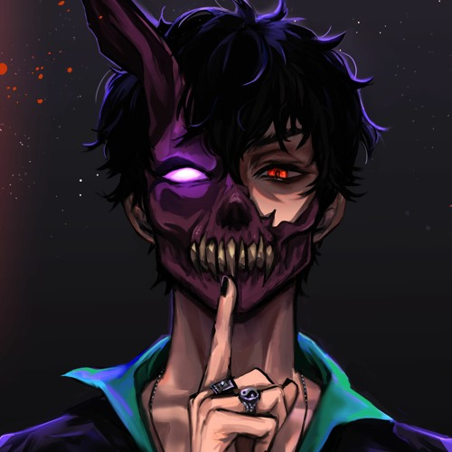
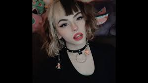

Introduction
Click here for more information over Corpse.
His Life
"Corpse Husband was born on August 8, 1997 in San Diego, California."
Career
"In 2015, Corpse began his career on YouTube by narrating horror stories on his channel,which he did consecutively until 2020. He made his musical debut in 2016, being featured on the single "Grim Grinning Ghost" by The Living Tombstone and Crusher P.."
In April 2021, Corpse participated in an hour-long charity Among Us stream on The Tonight Show with Jimmy Fallon, members of The Roots, fellow streamers Valkyrae and Sykkuno, and Stranger Things actors Gaten Matarazzo and Noah Schnapp, with proceeds going towards Feeding America. In September 2021, Corpse released a single entitled "Hot Demon B!tches Near U!!!" in collaboration with Night Lovell. In February 2022, Funimation announced Corpse's English dub debut voice role as Ōjirō Ōtori in the anime adaptation of Kazutaka Kodaka's Tribe Nine.
Two songs covers
.jpg)
"HOT DEMON B!TCHES NEAR U!!!" Cover
"E-GIRLS ARE RUINING MY LIFE!"Cover
There are many songs that I know from Corpse, but I like those two more.
Names from other songs
- E-Girls are ruining my life
- Hot demon b!tches near u
- White tee
- Daywalker
- Misa Misa!
- life waster
The date they appeared on his channel
- E-girls are ruining my life
- Daywalker
- Never satisfied
- Hot demon b!tches near u
- life waster
- Misa Misa!
Social Media
For more information please visit all of his pages down below!